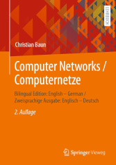

|
|
Wechseln Sie zur Seite in englischer Sprache
|


|
Computernetze ermöglichen den Zusammenschluss eigenständiger Computersysteme zur Kommunikation und gemeinsamen Nutzung von Ressourcen. Die Kommunikation in Computernetzen erfolgt über verschiedene Protokolle, die über verschiedene Schichtenmodelle (OSI-Referenzmodell, TCP/IP-Referenzmodell, hybrides Modell) strukturiert werden können. Zu Beginn der Vorlesung findet eine Einführung in die nötigen Grundlagen der Informatik und der Computernetze statt. Danach werden die Protokolle und ihre Klassifikation in die etablierten Referenzmodelle besprochen. Der Schwerpunkt dieser Vorlesung ist die Beschreibung des Transports von Daten durch die unterschiedlichen Protokollebenen und Übertragungsmedien. Die komplette Vorlesung (inkl. Übungen und Klausur) findet in englischer Sprache statt. Alle Vorlesungsunterlagen liegen mit identischem Inhalt in deutscher und englischer Sprache vor. Eine Übersicht über die verwendeten Fachbegriffe enthält diese Seite. Die Betreuung der Übungen geschieht im WS2324 in Zusammenarbeit mit Frau Wei Yin Shing. Die Vorlesungsunterlagen sind die Grundlage für die 6. Auflage des Buches Computernetze kompakt, das im Herbst 2022 bei Springer Vieweg erschienen ist. ISBN: 978-3-662-65362-3 Zusätzlich existiert eine bilinguale (Englisch-Deutsch) Ausgabe - Computer Networks / Computernetze, deren zweite Auflage im Herbst 2022 bei Springer Vieweg erschienen ist. ISBN: 978-3-658-38892-8
|
| Datum | Zeit | Raum | Veranstaltung | Inhalte |
|---|---|---|---|---|
| 19.10.2023 | 11:45-13:15 | 1-130 | Vorlesung | Besprechung von Foliensatz 1 (Folie 1-40) |
| 26.10.2023 | 11:45-13:15 | 1-130 | Vorlesung | Besprechung von Foliensatz 1 (Folie 41-46) + Foliensatz 2 (Folie 1-15) |
| 02.11.2023 | 11:45-13:15 | 1-130 | Vorlesung | Besprechung von Foliensatz 2 (Folie 16-39) |
| 09.11.2023 | Die Vorlesung und die Übungen können wegen einer Dienstreise nicht stattfinden | |||
| 16.11.2023 | 11:45-13:15 | 1-130 | Vorlesung | Besprechung von Foliensatz 2 (Folie 40-54) + Foliensatz 3 (Folie 1-18) |
| 23.11.2023 | 11:45-13:15 | 1-130 | Vorlesung | Besprechung von Foliensatz 4 + Foliensatz 5 (Folie 1-9) |
| 30.11.2023 | 11:45-13:15 | 1-130 | Vorlesung | Besprechung von Foliensatz 5 (Folie 10-39) |
| 07.12.2023 | 11:45-13:15 | 1-130 | Vorlesung | Besprechung von Foliensatz 6 (Folie 1-35) |
| 14.12.2023 | 11:45-13:15 | 1-130 | Vorlesung | Die Vorlesung und die Übungen können wegen einer Dienstreise nicht stattfinden |
| 21.12.2023 | 11:45-13:15 | 1-130 | Vorlesung | Besprechung von Foliensatz 7 (Folie 1-25) |
| 21.12.2023 | 14:30-16:00 | 1-234 | Weihnachtsspezial | |
| 28.12.2023 | Weihnachtsferien | |||
| 04.01.2024 | Weihnachtsferien | |||
| 11.01.2024 | 11:45-13:15 | 1-130 | Vorlesung | Besprechung von Foliensatz 7 (Folie 26-50) |
| 18.01.2024 | 11:45-13:15 | 1-130 | Vorlesung | Besprechung von Foliensatz 7 (Folie 51-69) + Foliensatz 8 (Folie 1-9) |
| 25.01.2024 | 11:45-13:15 | 1-130 | Vorlesung | Besprechung von Foliensatz 8 (Folie 10-55) |
| 01.02.2024 | 11:45-13:15 | 1-130 | Vorlesung | Besprechung von Foliensatz 9 (Folie 1-23) |
| 08.02.2024 | 11:45-13:15 | 1-130 | Vorlesung | Besprechung von Foliensatz 9 (Folie 24-49) |
| 20.02.2024 | 14:00-15:30 | TBD | Klausur | TBD |
| Foliensätze | Inhalte | ||
|---|---|---|---|
| Foliensatz 1 | Organisatorisches, Grundlagen der Computervernetzung, Protokolle und Referenzmodelle | ||
| Foliensatz 2 | Bitübertragungsschicht (Teil 1) | ||
| Foliensatz 3 | Bitübertragungsschicht (Teil 2) | ||
| Foliensatz 4 | Sicherungsschicht (Teil 1) | ||
| Foliensatz 5 | Sicherungsschicht (Teil 2) | ||
| Foliensatz 6 | Sicherungsschicht (Teil 3) | ||
| Foliensatz 7 | Vermittlungsschicht (Teil 1) | ||
| Foliensatz 8 | Vermittlungsschicht (Teil 2) | ||
| Foliensatz 9 | Transportschicht | ||
| Foliensatz 10 | Anwendungsschicht | ||
| Foliensatz 11 | Kryptologie (Grundbegriffe, Symmetrische Verfahren) | ||
| Foliensatz 12 | Kryptologie (Asymmetrische Verfahren, Schlüsselverteilung, Hashfunktionen) | ||
| Foliensatz 13 | Steganographie, Plagiatsfallen und Wasserzeichen | ||
Die Foliensätze 1 bis 10 sind klausurrelevant.
Die Foliensätze 11 bis 13 werden nicht in der Vorlesung besprochen und sind nicht klausurrelevant.
| Übungsblätter | Inhalte | Lösungen | |||
|---|---|---|---|---|---|
| Übungsblatt 1 | Foliensatz 1 (Grundlagen) | ||||
| Übungsblatt 2 | Foliensatz 2 + 3 (Bitübertragungsschicht) | ||||
| Übungsblatt 3 | Foliensatz 4 + 5 + 6 (Sicherungsschicht) | ||||
| Übungsblatt 4 | Foliensatz 7 + 8 (Vermittlungsschicht) | ||||
| Übungsblatt 5 | Foliensatz 9 + 10 (Transportschicht und Anwendungsschicht) | ||||
| Übungsblatt 6 | Foliensatz 11 + 12 + 13 (Kryptologie und Steganographie) | ||||
| Semester | Klausuren | Bearbeitungszeit | Hochschule | Lösungen | ||
|---|---|---|---|---|---|---|
| WS2223 | 90 Minuten | Frankfurt UAS | ||||
| WS2021 | 90 Minuten | Frankfurt UAS | ||||
| WS1920 | 90 Minuten | Frankfurt UAS | ||||
| WS1819 | 90 Minuten | Frankfurt UAS | ||||
| WS1718 | 90 Minuten | Frankfurt UAS | ||||
| SS2017 | 90 Minuten | Frankfurt UAS | ||||
| WS1617 | 90 Minuten | Frankfurt UAS | ||||
| SS2016 | 90 Minuten | Frankfurt UAS | ||||
| WS1516 | 90 Minuten | Frankfurt UAS | ||||
| SS2015 | 90 Minuten | Frankfurt UAS | ||||
| WS1415 | 90 Minuten | FH Frankfurt | ||||
| SS2014 | 90 Minuten | FH Frankfurt | ||||
| WS1314 | 90 Minuten | FH Frankfurt | ||||
| SS2012 | 90 Minuten | HS Darmstadt | ||||
| Aufgabenblatt | ||
| Netzwerkkomponenten |
| Ergebnis der Vorlesungsevaluation |
Zu erreichen bin ich am besten per E-Mail: christianbaun@fb2.fra-uas.de
|
Prof. Dr. Christian Baun Frankfurt University of Applied Sciences (1971-2014: Fachhochschule Frankfurt am Main) FB 2: Informatik und Ingenieurwissenschaften Stand: 26.2.2024 |
|